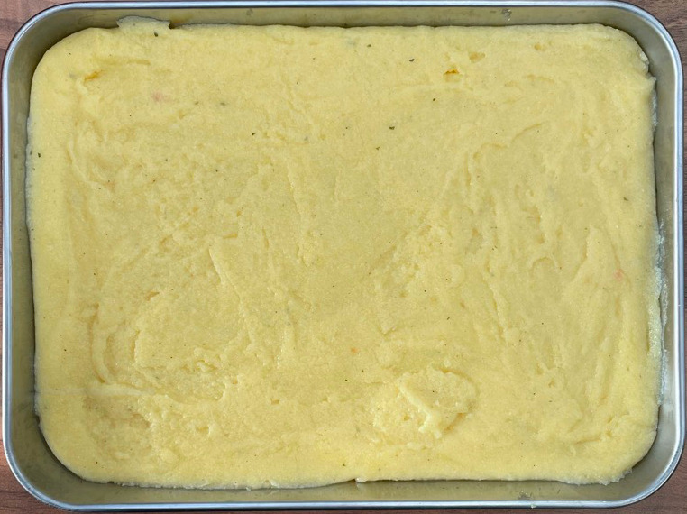

Polenta
Polenta
- Boil in pan
- 410ml water
- ½ salted stock cube
- Reduce heat and add 110g polenta whisking constantly to prevent lumps
- Remove heat
- Stir in 35g parmesan / cheddar grated
- Oil smallest steel baking tray
- Pour polenta onto tray and smooth out with silicon spatula
- Press flat with baking paper
- Leave to cool
- Chill in fridge for 30 mins
Chips
- Cut polenta into chips
- Coat chips in olive oil
- Roast ½ batch at 190°C for 15-16 mins in air fryer
Serving
Notes
- Cook as chips or slabs not cubes
- 25 mins in oven, use oven if need to cook full batch
Pics
